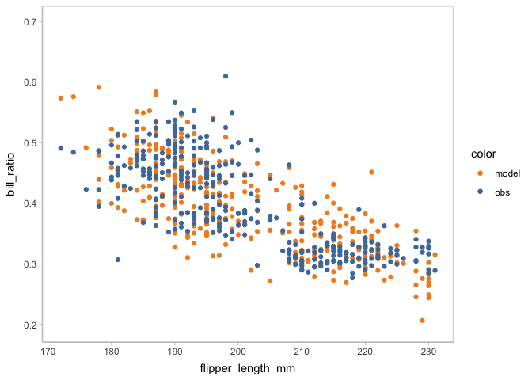
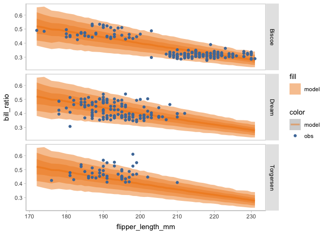
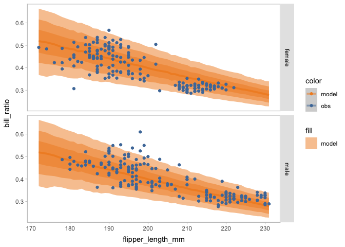

vmc is a visualization grammar designed to make it easy to generate informative visualizations for model checking. The vmc grammar assumes a basic workflow for creating model checks. First, the model predictions or model features need to be extracted as a distribution of data from a model object, i.e. data tidying. Then the user must specify an uncertainty representation to describe the selected distribution(s). They must also specify the presentation of the observed data. The user can choose among multiple comparative layouts to structure their comparison between observed data and model predictions.
Installation
You can install the development version of vmc from GitHub with:
# install.packages("devtools")
devtools::install_github("MUCollective/vmc")Usage
Set up
library(vmc)
library(ggplot2)
library(dplyr)
#>
#> Attaching package: 'dplyr'
#> The following objects are masked from 'package:stats':
#>
#> filter, lag
#> The following objects are masked from 'package:base':
#>
#> intersect, setdiff, setequal, union
library(palmerpenguins)
library(brms)
#> Loading required package: Rcpp
#> Loading 'brms' package (version 2.20.4). Useful instructions
#> can be found by typing help('brms'). A more detailed introduction
#> to the package is available through vignette('brms_overview').
#>
#> Attaching package: 'brms'
#> The following object is masked from 'package:stats':
#>
#> ar
library(ggdist)
#>
#> Attaching package: 'ggdist'
#> The following objects are masked from 'package:brms':
#>
#> dstudent_t, pstudent_t, qstudent_t, rstudent_t
library(tidybayes)
#>
#> Attaching package: 'tidybayes'
#>
#> The following objects are masked from 'package:brms':
#>
#> dstudent_t, pstudent_t, qstudent_t, rstudent_t
library(cowplot)
library(tidyr)
library(gganimate)
theme_set(theme_tidybayes() + panel_border())Model
First, we fit a beta regression model to predict the penguins’ bill ratio (i.e., bill depth / bill length) based on penguins’ flipper length.
penguins <- penguins %>%
drop_na(sex) %>%
mutate(is_gentoo = species == "Gentoo") %>%
mutate(bill_ratio = bill_depth_mm / bill_length_mm)
model_beta <- brm(
bf(bill_ratio ~ flipper_length_mm,
phi ~ flipper_length_mm),
family = Beta(),
init = "0",
data = penguins,
prior = c(prior(normal(0, 1), class = "b"),
prior(exponential(1), class = "b", dpar = "phi", lb = 0)),
file = "models/model.rds"
)The results…
model_beta
#> Family: beta
#> Links: mu = logit; phi = log
#> Formula: bill_ratio ~ flipper_length_mm
#> phi ~ flipper_length_mm
#> Data: penguins (Number of observations: 333)
#> Draws: 4 chains, each with iter = 2000; warmup = 1000; thin = 1;
#> total post-warmup draws = 4000
#>
#> Population-Level Effects:
#> Estimate Est.Error l-95% CI u-95% CI Rhat Bulk_ESS
#> Intercept 3.06 0.16 2.75 3.37 1.00 4082
#> phi_Intercept -1.35 1.30 -3.93 1.22 1.00 1844
#> flipper_length_mm -0.02 0.00 -0.02 -0.02 1.00 4210
#> phi_flipper_length_mm 0.03 0.01 0.02 0.04 1.00 1854
#> Tail_ESS
#> Intercept 2918
#> phi_Intercept 1479
#> flipper_length_mm 2768
#> phi_flipper_length_mm 1625
#>
#> Draws were sampled using sampling(NUTS). For each parameter, Bulk_ESS
#> and Tail_ESS are effective sample size measures, and Rhat is the potential
#> scale reduction factor on split chains (at convergence, Rhat = 1).Check on the shape of distrition
You can start model checking by check the shape of the distribution of predicted bill ratio and observed bill ratio. Using vmc, you can create a posterior predictive check by only one mcplot() (and also using coord_flip() to flip the response variable to the x-axis).
model_beta %>%
mcplot() +
mc_gglayer(coord_flip())
You can not only check on the shape of posterior predictive distribution, but also check on other posterior distributions generated by model_beta using the mc_distribution component. For example, there are two parameter mu and phi besides the response variable in the beta regression model we are using. Here, we are check on the posterior distribution of mu.
model_beta %>%
mcplot() +
mc_distribution("mu") +
mc_observation_transformation(mean) +
mc_obs_reference_line() +
mc_gglayer(coord_flip())
Check on the marginal effects
You may find the misalignment between the shape of predictive distribution and observed distribution. You can scrutinize the misalignment further by checking on the marginal effects of the predictor using mc_condition_on.
model_beta %>%
mcplot() +
mc_distribution(ndraws = 1) +
mc_condition_on(x = vars(flipper_length_mm))
To reveal the uncertainty information inside of the model predictions, you can use either HOPs or other uncertainty representations.
vmc supports HOPs as a method to group samples (see vignette("uncertainty-representation")).
model_beta %>%
mcplot() +
mc_distribution(ndraws = 50) +
mc_model_point(group_sample = "hops") +
mc_condition_on(x = vars(flipper_length_mm))
#> nframes and fps adjusted to match transition
You may find that some of the points of model predictions and observed data are overlapped together, which may cause visual clutter. To fix this problem, you can change to another comparative layout using mc_layout_*.
model_beta %>%
mcplot() +
mc_distribution(ndraws = 50) +
mc_model_point(group_sample = "hops") +
mc_condition_on(x = vars(flipper_length_mm)) +
mc_layout_juxtaposition()
#> nframes and fps adjusted to match transition
#> # A tibble: 50 × 7
#> format width height colorspace matte filesize density
#> <chr> <int> <int> <chr> <lgl> <int> <chr>
#> 1 gif 800 400 sRGB FALSE 0 28x28
#> 2 gif 800 400 sRGB FALSE 0 28x28
#> 3 gif 800 400 sRGB FALSE 0 28x28
#> 4 gif 800 400 sRGB FALSE 0 28x28
#> 5 gif 800 400 sRGB FALSE 0 28x28
#> 6 gif 800 400 sRGB FALSE 0 28x28
#> 7 gif 800 400 sRGB FALSE 0 28x28
#> 8 gif 800 400 sRGB FALSE 0 28x28
#> 9 gif 800 400 sRGB FALSE 0 28x28
#> 10 gif 800 400 sRGB FALSE 0 28x28
#> # ℹ 40 more rows
Other uncertainty representations are supported by the visual representation components (mc_model_* and mc_obs_*).
model_beta %>%
mcplot() +
mc_distribution(ndraws = 1000) +
mc_model_lineribbon() +
mc_condition_on(x = vars(flipper_length_mm))
Facet to find the source of multimodal
You may find there seem to be some clusters among the points of observed bill ratio. To find the source of this multimodal, you can change the conditional variable to facet the model checking on rows or columns using mc_condition_on.
model_beta %>%
mcplot(observation = penguins) +
mc_distribution(ndraws = 1000) +
mc_model_lineribbon() +
mc_condition_on(x = vars(flipper_length_mm),
row = vars(sex))
model_beta %>%
mcplot(observation = penguins) +
mc_distribution(ndraws = 1000) +
mc_model_lineribbon() +
mc_condition_on(x = vars(flipper_length_mm),
row = vars(island))
model_beta %>%
mcplot(observation = penguins) +
mc_distribution(ndraws = 1000) +
mc_model_lineribbon() +
mc_condition_on(x = vars(flipper_length_mm),
row = vars(species))
New model
When faceting on the species of penguins, you can see the points of observed bill ratio are clustered into three groups. This finding can inform an update on the model to include species as an independent variable.
model_species <- brm(
bf(bill_ratio ~ flipper_length_mm * species,
phi ~ flipper_length_mm * species),
family = Beta(),
init = "0",
data = penguins,
prior = c(prior(normal(0, 0.5), class = "b"),
prior(normal(0, 0.15), class = "b", dpar = "phi")),
cores = 4,
iter = 24000,
warmup = 14000,
file = "models/model_species.rds"
)The result…
model_species
#> Family: beta
#> Links: mu = logit; phi = log
#> Formula: bill_ratio ~ flipper_length_mm * species
#> phi ~ flipper_length_mm * species
#> Data: penguins (Number of observations: 333)
#> Draws: 4 chains, each with iter = 24000; warmup = 14000; thin = 1;
#> total post-warmup draws = 40000
#>
#> Population-Level Effects:
#> Estimate Est.Error l-95% CI u-95% CI
#> Intercept -0.40 0.26 -0.91 0.12
#> phi_Intercept 7.76 2.29 3.25 12.24
#> flipper_length_mm 0.00 0.00 -0.00 0.00
#> speciesChinstrap -0.13 0.32 -0.76 0.50
#> speciesGentoo -0.45 0.31 -1.05 0.15
#> flipper_length_mm:speciesChinstrap -0.00 0.00 -0.00 0.00
#> flipper_length_mm:speciesGentoo -0.00 0.00 -0.00 0.00
#> phi_flipper_length_mm -0.01 0.01 -0.04 0.01
#> phi_speciesChinstrap -0.01 0.15 -0.31 0.28
#> phi_speciesGentoo 0.00 0.15 -0.29 0.30
#> phi_flipper_length_mm:speciesChinstrap 0.01 0.00 0.00 0.01
#> phi_flipper_length_mm:speciesGentoo 0.01 0.00 0.00 0.01
#> Rhat Bulk_ESS Tail_ESS
#> Intercept 1.00 21184 25569
#> phi_Intercept 1.00 30353 28724
#> flipper_length_mm 1.00 21186 25744
#> speciesChinstrap 1.00 21067 24050
#> speciesGentoo 1.00 21687 24792
#> flipper_length_mm:speciesChinstrap 1.00 20879 23602
#> flipper_length_mm:speciesGentoo 1.00 20853 23819
#> phi_flipper_length_mm 1.00 30039 28653
#> phi_speciesChinstrap 1.00 35917 28882
#> phi_speciesGentoo 1.00 36834 27541
#> phi_flipper_length_mm:speciesChinstrap 1.00 38256 30833
#> phi_flipper_length_mm:speciesGentoo 1.00 27289 27179
#>
#> Draws were sampled using sampling(NUTS). For each parameter, Bulk_ESS
#> and Tail_ESS are effective sample size measures, and Rhat is the potential
#> scale reduction factor on split chains (at convergence, Rhat = 1).You can check on this new model on the marginal effects of flipper length and species in one plot by using mc_condition_on.
model_species %>%
mcplot() +
mc_distribution(ndraws = 1000) +
mc_model_lineribbon() +
mc_condition_on(x = vars(flipper_length_mm),
color = vars(species))
By this model checking, the new model is validated to capture the multimodal in the observed data. Then you can check more on the posterior distribution of the model conditioned on species using vmc.
model_species %>%
mcplot() +
mc_model_slab(side = "left") +
mc_obs_dots() +
mc_condition_on(x = vars(species))
Check on model assumptions
To check on some particular assumptions of the model, you can pick different mark types of the visual representation. For example, to check the calibration of the model, you can choose to use intervals to represent the model distribution.
model_species %>%
mcplot() +
mc_model_interval() +
mc_obs_interval() +
mc_condition_on(x = vars(species)) +
mc_layout_nested()
vmc also supports to check on other assumptions, like heteroskedasticity and the normality of residuals.
model_species %>%
mcplot() +
mc_distribution(ndraws = 1) +
mc_condition_on(x = vars(flipper_length_mm),
color = vars(species)) +
mc_layout_encoding("residual") +
mc_gglayer(geom_hline(yintercept = 0))
model_species %>%
mcplot() +
mc_distribution(ndraws = 1) +
mc_condition_on(color = vars(species)) +
mc_layout_encoding("qq") +
mc_gglayer(geom_abline())